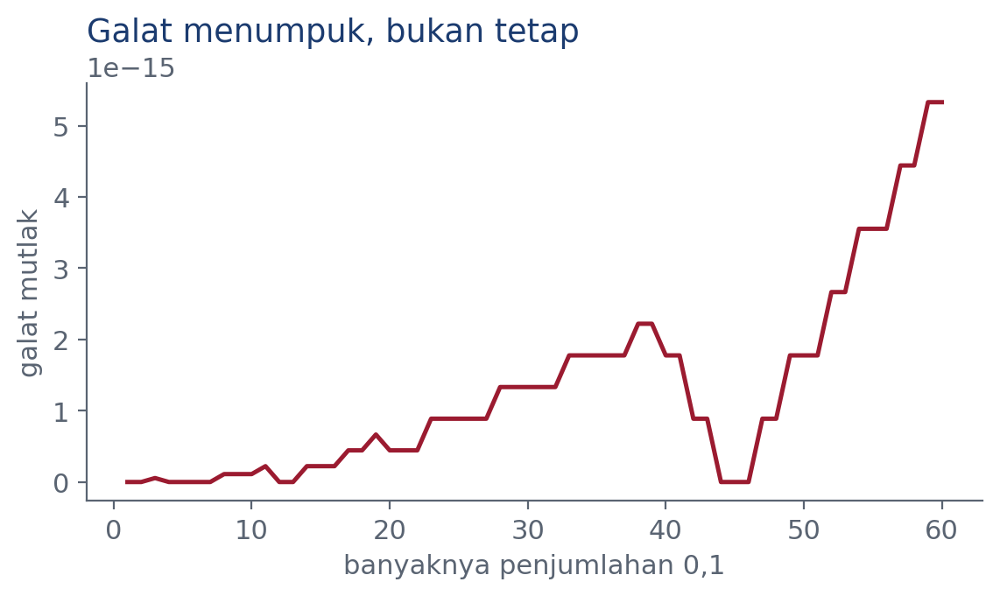
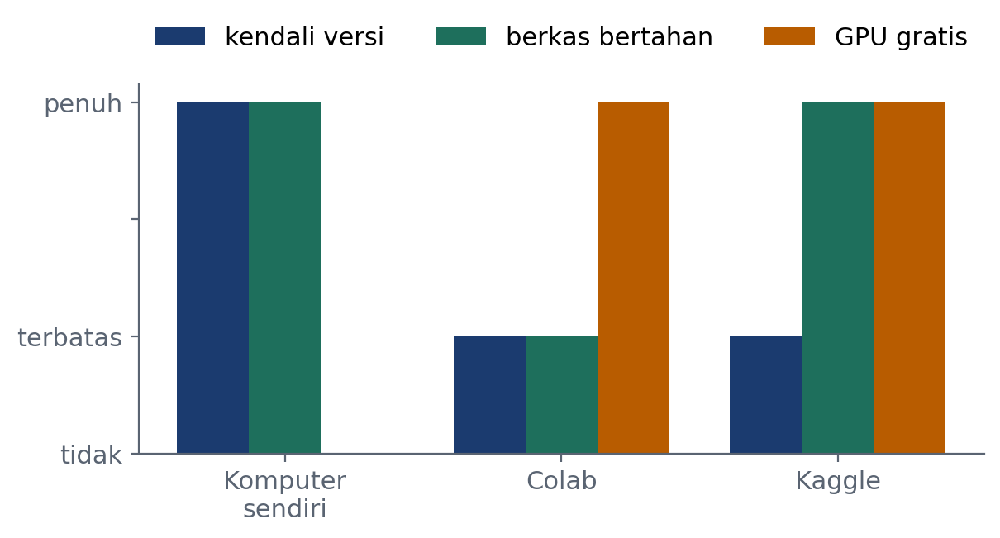

Praktikum Pemrograman Komputer · Kelas B
Lingkungan Kerja
dan Tipe Data
Dr. Mohammad Jamhuri
Program Studi Matematika · Fakultas Sains dan Teknologi
UIN Maulana Malik Ibrahim Malang
Praktikum 1 · Buku Bab 1 dan 2 · 90 menit
Sembilan puluh menit hari ini
- Pemanasan 10 menit
- Duga keluaran kodenya 15 menit
- Jalankan, lalu bandingkan 5 menit
- Selidiki bedanya 25 menit
- Ubah, berpasangan 20 menit
- Buat sendiri 10 menit
- Tiket keluar 5 menit
Urutan ini bukan karangan.
Dikenal sebagai PRIMM, dikembangkan Sue Sentance dan tim King’s College London. Terbukti lebih berhasil daripada langsung menyuruh menulis kode tanpa tahap penyelidikan lebih dahulu.
Sesudah dua belas pertemuan, Anda dapat…
- menulis program Python dari nol, bukan menyalin dari internet
- membaca pesan galat dan tahu harus memperbaiki apa
- mengolah data nyata dengan NumPy dan pandas
- melatih model dan menilainya dengan jujur
Perhatikan kata terakhir. Yang sulit bukan melatih model. Yang sulit menilai apakah hasilnya bermakna atau menyesatkan.
Satu gagasan yang menyatukan mata kuliah ini
Kesalahan yang
paling mahal
hampir tidak pernah memunculkan pesan galat.
Kebocoran data
Akurasi 95 persen pada data yang tidak punya sinyal apa pun.
Matriks buruk
Jawaban tampak wajar, padahal seluruh angkanya sudah tidak berarti.
Pencilan dibuang
Grafiknya jadi bersih, sepertiga pendapatan usaha ikut hilang.
Ketiganya berjalan tanpa satu pun galat. Itulah bahayanya.
Aturan main
Yang dinilai
- Tahap Ubah dan Buat — 30%
- Tugas rumah — 25%
- Proyek akhir — 30%
- Lembar dugaan — 10%
- Tiket keluar — 5%
Lembar dugaan dinilai dari terisi, bukan dari benar.
Ini disengaja. Dugaan yang meleset justru bahan paling berharga sepanjang pertemuan.
Kode yang tidak jalan tetap dikumpulkan. Yang dinilai kemampuan menjelaskan apa yang Anda coba.
Tahap satu
Pemanasan
jawab sendiri, diskusi, jawab ulang · 10 menit
Soal P1.1
Sebuah paket dipasang dengan pip install pandas, tetapi
import pandas tetap gagal. Penyebab yang paling mungkin:
pipmilik Python yang berbeda dari yang menjalankan kode- komputernya perlu dinyalakan ulang
- nama paketnya salah
- paketnya rusak
Jawab sendiri dulu. Jangan bicara.
Sekarang diskusikan dengan teman sebelah yang jawabannya berbeda.
Bekal
Lingkungan Virtual
Mengapa lingkungan virtual
Satu Python untuk semua proyek
Proyek A butuh pandas 3.0, proyek B masih pakai pandas 2.2, proyek C tidak butuh pandas sama sekali. Ketiganya berebut satu pemasangan yang sama.
Satu lingkungan untuk tiap proyek
Tiap proyek punya folder .venv sendiri.
Apa yang dipasang di satu proyek tidak menyentuh proyek lain.
Memasang pandas 3 untuk proyek A akan merusak proyek B — dan Anda baru tahu berminggu kemudian, saat sedang mengejar tenggat.
Membuatnya cukup empat perintah
mkdir praktikum-python
cd praktikum-python
python3 -m venv .venv
source .venv/bin/activate # Windows: .venv\Scripts\activate
Tandanya berhasil: muncul (.venv) di depan baris perintah.
Selalu periksa Python mana yang aktif
python -c "import sys; print(sys.executable)"
Alamat yang tercetak harus berada di dalam folder .venv.
Memasang paket
python -m pip install --upgrade pip
python -m pip install numpy pandas matplotlib \
scikit-learn scipy sympy
Mengapa python -m pip, bukan pip saja
Bentuk python -m pip memastikan pip yang dipanggil
milik Python yang sedang aktif. Perintah pip saja bisa menunjuk
pemasangan lain, dan paketnya mendarat di tempat yang salah.
Inilah jawaban soal pemanasan tadi.
Tahap dua
Duga
jangan dijalankan dulu · 15 menit
Duga keluarannya
a = 0.1 + 0.2 print(a) print(a == 0.3) print(f"{a:.20f}") print(7 // 2, 7 % 2) print(-7 // 2, -7 % 2)
Isi lembar dugaan
| Bagian | Dugaan |
|---|---|
a | _______ |
a == 0.3 | _______ |
-7 // 2 | _______ |
-7 % 2 | _______ |
Tuliskan dugaan Anda lebih dahulu. Tidak perlu yakin, cukup jujur.
Tahap tiga
Jalankan
Jalankan, lalu bandingkan
a = 0.1 + 0.2 print(a) print(a == 0.3)
0.30000000000000004 False
print(f"{a:.20f}")
0.30000000000000004441
Ini bukan bug Python. Setiap bahasa yang memakai bilangan titik-mengambang berperilaku sama. Yang berbeda hanya berapa banyak angka yang ditampilkan.
Mengapa begitu

Pecahan \(0{,}1\) dalam basis dua adalah pecahan berulang, persis seperti \(\tfrac{1}{3}\) dalam basis sepuluh. Komputer memotongnya pada 53 bit.
Akibatnya. Yang tersimpan bukan \(0{,}1\), melainkan bilangan terdekat yang dapat diwakili. Menjumlahkan dua hampiran menghasilkan hampiran ketiga, dan hampiran itu tidak persis \(0{,}3\).
Galatnya menumpuk, bukan tetap

Setelah 60 kali menjumlahkan \(0{,}1\), selisihnya \(5{,}3\times10^{-15}\).
Pelajaran praktisnya. Jangan pernah
membandingkan dua bilangan riil dengan ==. Bandingkan
selisihnya terhadap sebuah toleransi.
Tahap empat
Selidiki
25 menit
Tiga pertanyaan penyelidikan
- Cetak
f"{0.1:.20f}"danf"{0.2:.20f}". Dari mana angka sisa di belakang itu berasal? - Pembagian
-7 // 2menghasilkan \(-4\), bukan \(-3\). Rumuskan aturannya dengan satu kalimat, lalu uji pada-9 // 4dan-1 // 5. - Jalankan
sys.executabledi dalam dan di luar lingkungan virtual. Hubungkan dengan jawaban soal pemanasan tadi.
Susun ulang potongan kode
Urutannya diacak. Susun kembali.
(A) python -m pip install numpy (B) cd praktikum-python (C) source .venv/bin/activate (D) mkdir praktikum-python (E) python3 -m venv .venv
Kesalahan yang paling sering: memasang paket sebelum lingkungannya diaktifkan.
Tahap lima dan enam
Ubah dan Buat
Tahap Ubah berpasangan, 20 menit
Aturan berpasangan. Pengemudi memegang papan ketik. Navigator membaca dan memeriksa, dan tidak boleh menyentuh papan ketik. Bertukar tiap sepuluh menit.
def hampir_sama(a, b, toleransi=1e-9): # lengkapi satu baris di sini ... print(hampir_sama(0.1 + 0.2, 0.3)) print(hampir_sama(1.0, 1.5))
Lalu: buat toleransinya menyesuaikan besar bilangannya,
dan bandingkan dengan math.isclose pada (1e10, 1e10 + 1).
Tahap Buat sendiri, 10 menit
- Tulis program yang menerima sebuah bilangan bulat lalu mencetak jumlah seluruh digitnya, tanpa mengubahnya menjadi teks.
- Buka satu notebook dari GitHub di Colab dan di Kaggle. Cetak versi Python, NumPy, dan pandas di kedua layanan, lalu bandingkan dengan komputer Anda sendiri.
Tiga cara bekerja, dan bedanya

Yang diimpor hanya notebooknya, bukan
lingkungannya. Berkas requirements.txt tidak dibaca sama
sekali oleh Colab maupun Kaggle. Versi pustakanya ditentukan layanan, dan bisa
berubah tanpa pemberitahuan. Karena itu jalankan pemeriksa lingkungan pada sel
pertama, selalu.
Sebelum pulang
Tiket keluar
Tulis tangan satu kalimat:
Dugaan mana yang paling jauh meleset hari ini, dan mengapa menurut Anda?
Tugas rumah
- Latihan 1.1–1.4 pada buku
- Latihan 2.1, 2.3, 2.7
- Cetak sepuluh suku barisan yang dimulai \(0{,}1\) lalu ditambah \(0{,}1\). Pada suku ke berapa mulai meleset?
Pertemuan berikutnya: Percabangan dan Perulangan
Bekal awal: baca Bab 3 seluruhnya
Praktikum 1 selesai
Sampai jumpa pekan depan
Buku: Python untuk Machine Learning dan Data Science
Kode: github.com/jamhuri-tech/buku-python-ml-kode